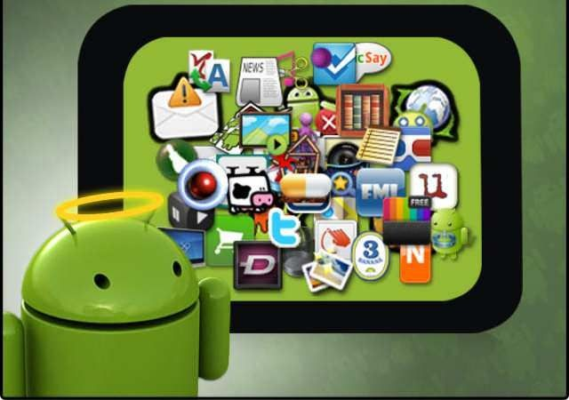
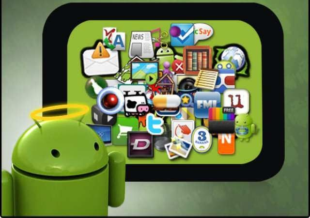

O uso correto da tecnologia na infância é um verdadeiro desafio. Os chamados nascidos digitais parecem ter habilidades natas para lidar com a comunicação online e com as diversas ferramentas que a tecnologia traz para o nosso dia a dia. Para os pais, no entanto, que nasceram e cresceram em um contexto completamente diferente, as coisas podem não ser assim tão fáceis. A tecnologia está na vida das crianças, issé um fato inegável. Proibir todos odispositivos tecnológicos não é umalternativa possível, e muito menos a maiindicada. A tecnologia é uma ferramentpositiva, que traz inúmeras vantagens adesenvolvimento das crianças e adolescentesdesde que usada da forma correta e com direcionamento certo. Para isso, os pequenos devem receber umorientação adequada. Precisam desde cedaprender a evitar os pontos negativos e a sdesenvolver aproveitando todas apotencialidades do mundo novo, qudefinitivamente é tecnológico.
Prepara para o futuro
Hoje, o mercado de trabalho é dominado pela tecnologia, e vale ressaltar que já há uma grande falta de mão de obra especializada para atuar nessa nova realidade. Saber usar ferramentas tecnológicas não é mais um diferencial, é uma exigência básica para qualquer cargo minimamente qualificado. Daqui a 10 ou 20 anos, tudo indica que essa presença tecnológica será ainda mais intensa — e é com esse mundo que os jovens de hoje terão que lidar. A tecnologia é presente e futuro, e quanto mais as crianças e adolescentes aprenderem a trabalhar com ela, maiores serão suas chances de sucesso na vida profissional.
Desenvolve a capacidade de aprendizado
Assim como todo o corpo da criança, o cérebro infantil também está em constante desenvolvimento. Novas conexões são formadas a cada instante, e o modo como essa construção se dá é fundamental para o resto da vida de um ser humano. Sem substituir outras relações, como o contato pessoal e o afeto, jogos e outras atividades interativas são excelentes estimulantes para os pequenos cérebros em desenvolvimento. Ao ampliar as potencialidades do cérebro com mais rapidez, devido a uma mente mais aberta e apta a aprender com facilidade sobre diversos assuntos e de diferentes formas. É um crescimento proporcional: quanto mais se aprende, mais facilidade e interesse se tem pelo aprendizado.
Permite que a criança produza conteúdo
.jpeg) 

Sim, esse é um grande benefício. Com a supervisão e orientação correta de um adulto, é claro, a criança pode produzir o que quiser e disponibilizar na rede. Textos, vídeos, sites e, por que não, jogos? A ideia de não só receber um conteúdo pronto, mas também ser capaz de construir e divulgar aquilo que de seu interesse, faz com que a criança assuma o lugar de protagonista em seu próprio aprendizado. Ela se torna muito mais independente e autodidata, além de desenvolver o pensamento crítico e a capacidade de ensinar. Além disso, o contato constante com realidades diferentes da sua e a visão de que todo mundo pode produzir seu próprio conteúdo é excelente para ensinar à criança sobre tolerância e respeito.
Ao inserir a tecnologia na Educação Infantil, é possível identificar diversas vantagens para os pequenos, como:
- aumento do interesse por aprender;
- estimulação da criatividade;
- desenvolvimento de novas habilidades e gostos;
- aprendizagem de forma divertida;
- aumento da atenção no momento da execução das tarefas;
- desenvolvimento da imaginação;

- capacidade de absorver conteúdos de maneira interativa e lúdica;
- desenvolvimento da linguagem e comunicação;
- associação de figuras, formas, objetos, letras, palavras, animais, sons, entre outros;
- aprendizado de novas línguas;
- desenvolvimento da autonomia.